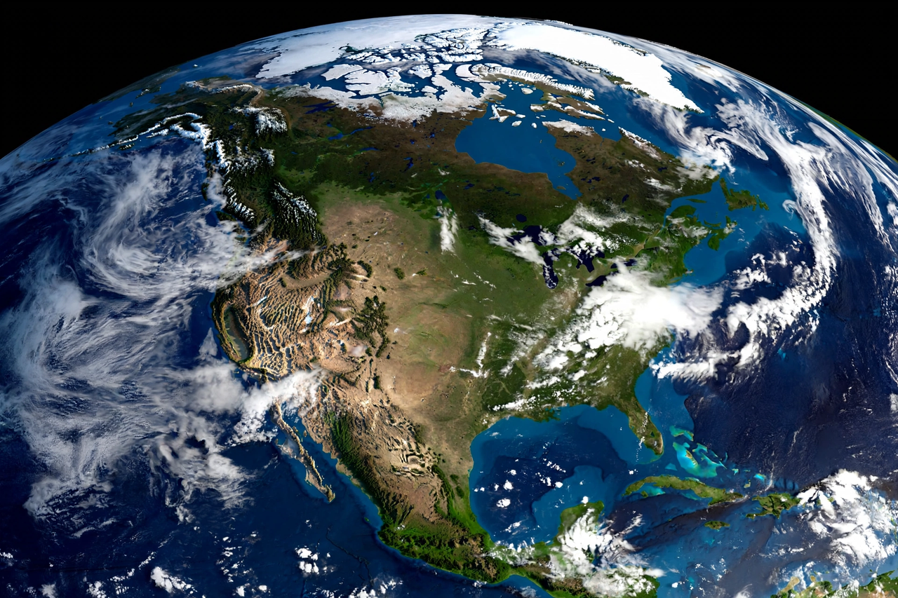

North America

North America is a continent in the Northern and Western Hemispheres. It is bordered to the north by the Arctic Ocean, to the east by the Atlantic Ocean, to the southeast by South America and the Caribbean Sea, and to the west and southwest by the Pacific Ocean. North America covers an area of about 24.7 million square kilometres, about 16.5 percent of the Earth's land area and about 4.8 percent of its total surface. As of recent estimates its population is roughly 600 million people in 23 independent states.
North America is the third-largest continent by area, following Asia and Africa, and the fourth by population after Asia, Africa and Europe. It includes the subregion of Central America and the Caribbean islands.
Geography
The continent's major physical features include the Rocky Mountains and other western cordilleras, the Canadian Shield, the Great Plains, the Appalachian Mountains in the east, and the Great Lakes system. Its highest point is Denali in Alaska, at 6,190 metres the tallest mountain in North America. Major rivers include the Mississippi-Missouri system, the Mackenzie, the Yukon, the Rio Grande and the St. Lawrence.
North America extends from the Arctic archipelago of Canada in the north to the Isthmus of Panama in the south, where it connects to South America. Greenland, the world's largest island, is geographically part of North America although politically associated with Denmark.
Countries and regions
The largest countries by area are Canada, the United States and Mexico. Other states include the Central American countries of Guatemala, Belize, Honduras, El Salvador, Nicaragua, Costa Rica and Panama, and numerous Caribbean island nations such as Cuba, Jamaica, Haiti, the Dominican Republic, the Bahamas and Trinidad and Tobago.
History
Indigenous peoples have inhabited North America for well over 15,000 years. Norse explorers reached Newfoundland around the year 1000, and sustained European contact began with the voyages of Christopher Columbus from 1492. European colonisation by Spain, France, Britain and others reshaped the continent's demography, and the United States, Canada and Mexico emerged as its dominant modern states.